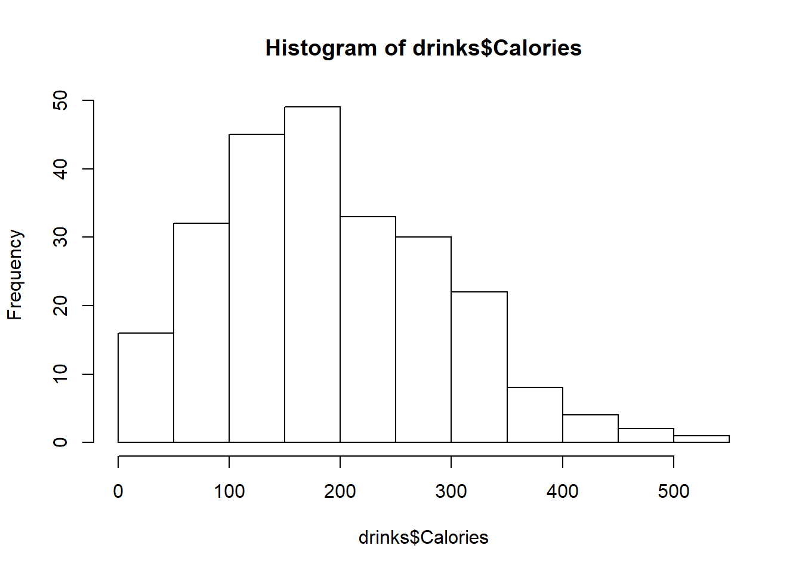

dplyr Homework
library(tidyverse)MVP
drinks <- read_csv("data/starbucks_drinkMenu_expanded.csv")head(drinks, 5)## # A tibble: 5 x 18
## Beverage_catego~ Beverage Beverage_prep Calories `Total Fat (g)`
## <chr> <chr> <chr> <dbl> <chr>
## 1 Coffee Brewed ~ Short 3 0.1
## 2 Coffee Brewed ~ Tall 4 0.1
## 3 Coffee Brewed ~ Grande 5 0.1
## 4 Coffee Brewed ~ Venti 5 0.1
## 5 Classic Espress~ Caffè L~ Short Nonfat~ 70 0.1
## # ... with 13 more variables: `Trans Fat (g)` <dbl>, `Saturated Fat (g)` <dbl>,
## # `Sodium (mg)` <dbl>, `Total Carbohydrates (g)` <dbl>, `Cholesterol
## # (mg)` <dbl>, `Dietary Fibre (g)` <dbl>, `Sugars (g)` <dbl>, `Protein
## # (g)` <dbl>, `Vitamin A (% DV)` <chr>, `Vitamin C (% DV)` <chr>, `Calcium (%
## # DV)` <chr>, `Iron (% DV)` <chr>, `Caffeine (mg)` <chr>tail(drinks, 5)## # A tibble: 5 x 18
## Beverage_catego~ Beverage Beverage_prep Calories `Total Fat (g)`
## <chr> <chr> <chr> <dbl> <chr>
## 1 Frappuccino® Bl~ Strawbe~ Soymilk 320 3 2
## 2 Frappuccino® Bl~ Vanilla~ Tall Nonfat ~ 170 0.1
## 3 Frappuccino® Bl~ Vanilla~ Whole Milk 200 3.5
## 4 Frappuccino® Bl~ Vanilla~ Soymilk 180 1.5
## 5 Frappuccino® Bl~ Vanilla~ Grande Nonfa~ 240 0.1
## # ... with 13 more variables: `Trans Fat (g)` <dbl>, `Saturated Fat (g)` <dbl>,
## # `Sodium (mg)` <dbl>, `Total Carbohydrates (g)` <dbl>, `Cholesterol
## # (mg)` <dbl>, `Dietary Fibre (g)` <dbl>, `Sugars (g)` <dbl>, `Protein
## # (g)` <dbl>, `Vitamin A (% DV)` <chr>, `Vitamin C (% DV)` <chr>, `Calcium (%
## # DV)` <chr>, `Iron (% DV)` <chr>, `Caffeine (mg)` <chr>drinks## # A tibble: 242 x 18
## Beverage_catego~ Beverage Beverage_prep Calories `Total Fat (g)`
## <chr> <chr> <chr> <dbl> <chr>
## 1 Coffee Brewed ~ Short 3 0.1
## 2 Coffee Brewed ~ Tall 4 0.1
## 3 Coffee Brewed ~ Grande 5 0.1
## 4 Coffee Brewed ~ Venti 5 0.1
## 5 Classic Espress~ Caffè L~ Short Nonfat~ 70 0.1
## 6 Classic Espress~ Caffè L~ 2% Milk 100 3.5
## 7 Classic Espress~ Caffè L~ Soymilk 70 2.5
## 8 Classic Espress~ Caffè L~ Tall Nonfat ~ 100 0.2
## 9 Classic Espress~ Caffè L~ 2% Milk 150 6
## 10 Classic Espress~ Caffè L~ Soymilk 110 4.5
## # ... with 232 more rows, and 13 more variables: `Trans Fat (g)` <dbl>,
## # `Saturated Fat (g)` <dbl>, `Sodium (mg)` <dbl>, `Total Carbohydrates
## # (g)` <dbl>, `Cholesterol (mg)` <dbl>, `Dietary Fibre (g)` <dbl>, `Sugars
## # (g)` <dbl>, `Protein (g)` <dbl>, `Vitamin A (% DV)` <chr>, `Vitamin C (%
## # DV)` <chr>, `Calcium (% DV)` <chr>, `Iron (% DV)` <chr>, `Caffeine
## # (mg)` <chr>drinks$Calories <- gsub("-", NA, drinks$Calories)
drinks$`Fat (g)` <- gsub("-", NA, drinks$`Fat (g)`)
drinks$`Carb. (g)` <- gsub("-", NA, drinks$`Carb. (g)`)
drinks$`Fiber (g)` <- gsub("-", NA, drinks$`Fiber (g)`)
drinks$Protein <- gsub("-", NA, drinks$Protein)
drinks$Sodium <- gsub("-", NA, drinks$Sodium)
drinks$Calories <- as.integer(drinks$Calories)
drinks$`Fat (g)` <- as.integer(drinks$`Fat (g)`)
drinks$`Carb. (g)` <- as.integer(drinks$`Carb. (g)`)
drinks$`Fiber (g)` <- as.integer(drinks$`Fiber (g)`)
drinks$Protein <- as.integer(drinks$Protein)
drinks$Sodium <- as.integer(drinks$Sodium)summary_statistics <- list()
summary_statistics$mean <- mean(drinks$Calories, na.rm = TRUE)
summary_statistics$variance <- var(drinks$Calories, na.rm = TRUE)
hist(drinks$Calories)
outlier_ids <- boxplot(
drinks$Calories
)$out
filter(
drinks,
Calories %in% outlier_ids
)## # A tibble: 1 x 18
## Beverage_catego~ Beverage Beverage_prep Calories `Total Fat (g)`
## <chr> <chr> <chr> <dbl> <chr>
## 1 Signature Espre~ White C~ 2% Milk 510 15
## # ... with 13 more variables: `Trans Fat (g)` <dbl>, `Saturated Fat (g)` <dbl>,
## # `Sodium (mg)` <dbl>, `Total Carbohydrates (g)` <dbl>, `Cholesterol
## # (mg)` <dbl>, `Dietary Fibre (g)` <dbl>, `Sugars (g)` <dbl>, `Protein
## # (g)` <dbl>, `Vitamin A (% DV)` <chr>, `Vitamin C (% DV)` <chr>, `Calcium (%
## # DV)` <chr>, `Iron (% DV)` <chr>, `Caffeine (mg)` <chr>select(drinks, Beverage_category, Beverage, Beverage_prep, Calories)## # A tibble: 242 x 4
## Beverage_category Beverage Beverage_prep Calories
## <chr> <chr> <chr> <dbl>
## 1 Coffee Brewed Coffee Short 3
## 2 Coffee Brewed Coffee Tall 4
## 3 Coffee Brewed Coffee Grande 5
## 4 Coffee Brewed Coffee Venti 5
## 5 Classic Espresso Drinks Caffè Latte Short Nonfat Milk 70
## 6 Classic Espresso Drinks Caffè Latte 2% Milk 100
## 7 Classic Espresso Drinks Caffè Latte Soymilk 70
## 8 Classic Espresso Drinks Caffè Latte Tall Nonfat Milk 100
## 9 Classic Espresso Drinks Caffè Latte 2% Milk 150
## 10 Classic Espresso Drinks Caffè Latte Soymilk 110
## # ... with 232 more rowsfilter(
drinks,
Beverage_category == "Classic Espresso Drinks"
)## # A tibble: 58 x 18
## Beverage_catego~ Beverage Beverage_prep Calories `Total Fat (g)`
## <chr> <chr> <chr> <dbl> <chr>
## 1 Classic Espress~ Caffè L~ Short Nonfat~ 70 0.1
## 2 Classic Espress~ Caffè L~ 2% Milk 100 3.5
## 3 Classic Espress~ Caffè L~ Soymilk 70 2.5
## 4 Classic Espress~ Caffè L~ Tall Nonfat ~ 100 0.2
## 5 Classic Espress~ Caffè L~ 2% Milk 150 6
## 6 Classic Espress~ Caffè L~ Soymilk 110 4.5
## 7 Classic Espress~ Caffè L~ Grande Nonfa~ 130 0.3
## 8 Classic Espress~ Caffè L~ 2% Milk 190 7
## 9 Classic Espress~ Caffè L~ Soymilk 150 5
## 10 Classic Espress~ Caffè L~ Venti Nonfat~ 170 0.4
## # ... with 48 more rows, and 13 more variables: `Trans Fat (g)` <dbl>,
## # `Saturated Fat (g)` <dbl>, `Sodium (mg)` <dbl>, `Total Carbohydrates
## # (g)` <dbl>, `Cholesterol (mg)` <dbl>, `Dietary Fibre (g)` <dbl>, `Sugars
## # (g)` <dbl>, `Protein (g)` <dbl>, `Vitamin A (% DV)` <chr>, `Vitamin C (%
## # DV)` <chr>, `Calcium (% DV)` <chr>, `Iron (% DV)` <chr>, `Caffeine
## # (mg)` <chr>drink_calories <- as_tibble(
drinks %>%
select(Beverage_category, Beverage, Beverage_prep, Calories) %>%
mutate(
calorie_diff = Calories - 135
) %>%
arrange(
desc(Calories),
Beverage_category,
Beverage
)
)drink_calories## # A tibble: 242 x 5
## Beverage_category Beverage Beverage_prep Calories calorie_diff
## <chr> <chr> <chr> <dbl> <dbl>
## 1 Signature Espresso ~ White Chocolate Mo~ 2% Milk 510 375
## 2 Frappuccino® Blende~ Java Chip (Without~ Whole Milk 460 325
## 3 Signature Espresso ~ White Chocolate Mo~ Soymilk 460 325
## 4 Signature Espresso ~ White Chocolate Mo~ Venti Nonfat ~ 450 315
## 5 Tazo® Tea Drinks Tazo® Green Tea La~ 2% Milk 450 315
## 6 Frappuccino® Blende~ Java Chip (Without~ Soymilk 430 295
## 7 Frappuccino® Blende~ Java Chip (Without~ Venti Nonfat ~ 420 285
## 8 Signature Espresso ~ White Chocolate Mo~ 2% Milk 400 265
## 9 Frappuccino® Blende~ Mocha (Without Whi~ Whole Milk 390 255
## 10 Tazo® Tea Drinks Tazo® Green Tea La~ Soymilk 390 255
## # ... with 232 more rowsdrinks_grouped <- as_tibble(
drink_calories %>%
group_by(Beverage_category)
)drinks_grouped## # A tibble: 242 x 5
## Beverage_category Beverage Beverage_prep Calories calorie_diff
## <chr> <chr> <chr> <dbl> <dbl>
## 1 Signature Espresso ~ White Chocolate Mo~ 2% Milk 510 375
## 2 Frappuccino® Blende~ Java Chip (Without~ Whole Milk 460 325
## 3 Signature Espresso ~ White Chocolate Mo~ Soymilk 460 325
## 4 Signature Espresso ~ White Chocolate Mo~ Venti Nonfat ~ 450 315
## 5 Tazo® Tea Drinks Tazo® Green Tea La~ 2% Milk 450 315
## 6 Frappuccino® Blende~ Java Chip (Without~ Soymilk 430 295
## 7 Frappuccino® Blende~ Java Chip (Without~ Venti Nonfat ~ 420 285
## 8 Signature Espresso ~ White Chocolate Mo~ 2% Milk 400 265
## 9 Frappuccino® Blende~ Mocha (Without Whi~ Whole Milk 390 255
## 10 Tazo® Tea Drinks Tazo® Green Tea La~ Soymilk 390 255
## # ... with 232 more rowsdrinks_summary <- drinks_grouped %>%
select(Beverage_prep, Calories) %>%
group_by(Beverage_prep) %>%
summarise(
mean_cal = round(mean(Calories), 2)
) %>%
arrange(
desc(mean_cal)
)drinks_summary## # A tibble: 13 x 2
## Beverage_prep mean_cal
## <chr> <dbl>
## 1 Whole Milk 284.
## 2 Venti Nonfat Milk 260
## 3 2% Milk 218
## 4 Grande Nonfat Milk 210.
## 5 Soymilk 207.
## 6 Tall Nonfat Milk 148.
## 7 Venti 119.
## 8 Short Nonfat Milk 99.2
## 9 Grande 85.7
## 10 Tall 63.4
## 11 Short 37
## 12 Doppio 10
## 13 Solo 5drinks_piped <- drinks %>%
select(Beverage_category, Beverage, Beverage_prep, Calories) %>%
filter(Beverage_category == "Classic Espresso Drinks") %>%
mutate(
calorie_diff = Calories - 135
) %>%
group_by(Beverage_prep) %>%
summarise(
mean_cal = round(mean(Calories), 2)
) %>%
arrange(
desc(mean_cal)
)drinks_piped## # A tibble: 12 x 2
## Beverage_prep mean_cal
## <chr> <dbl>
## 1 Venti Nonfat Milk 194
## 2 2% Milk 184.
## 3 Soymilk 151.
## 4 Grande Nonfat Milk 150
## 5 Tall Nonfat Milk 116
## 6 Short Nonfat Milk 78
## 7 Venti 25
## 8 Grande 15
## 9 Doppio 10
## 10 Tall 10
## 11 Short 5
## 12 Solo 5